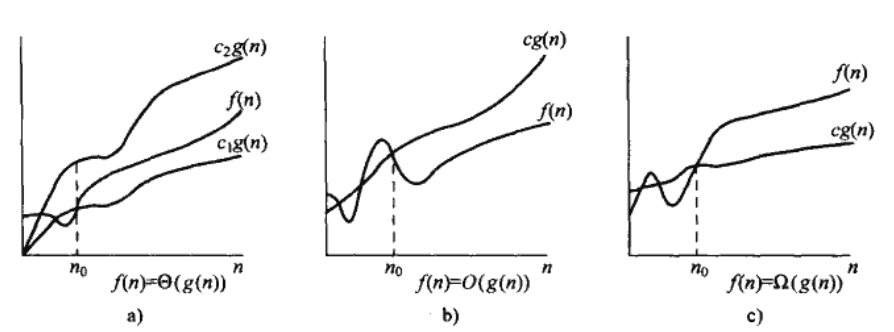
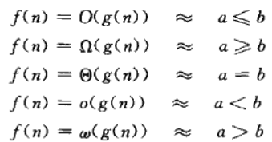

2012.07.06 首先开始的项目 从明天正是开始 今天先有一个overview就好了。 2012.07.07 练车回来头晕晕乎乎的 下午才开始看书。
第三章
θ, ο, Ω代表的意义
(首先是这三个字母的输入： 希腊字母VIM输入)
θ 表示的是曲线的上线和下限
Ο 表示的是曲线的上限 , ο(这个是小写的)表示的是非tight的 例如 ο(n2)=g(n), 而大写的Ο既可以表示tight的也可以表示untight的
Ω 表示的是曲线的下限， ω同上所示
具体如图：

Θ,ο,Ο,ω,Ω的关系
可以类比于 比大小，如下：

第四章
-
to do list
- 中文版拿来以后 做一下40页的练习题，并且搞清楚原理
2012.07.12
I am back~ 完成了第五章，课后题都很难 第二遍看的时候再做。 另外看了一下 CS218课程大纲 三种方法是重点 next
try to implement the heapsort
2012.07.13
time flies.
done of Heapsort in ~/sourcecode/Algorithm_introduce/heapsort
bool dataInit(){
int size = 0;
cin >> size;
data.resize( size);
heapSize = size;
srand(time(NULL));
for ( int iter = 0; iter < data.size(); ++iter){
data[iter] = rand();
}
return true;
}
2012.07.14
- implement the Quicksort Algorithm.
- reading introducion of Algorithm